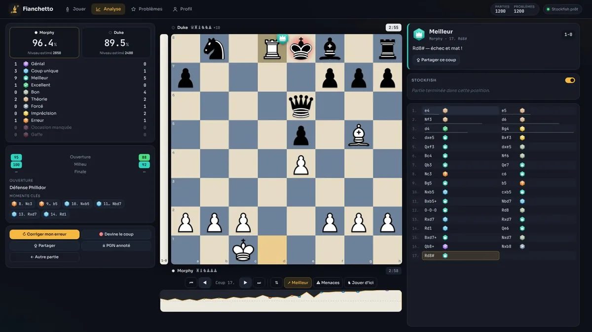
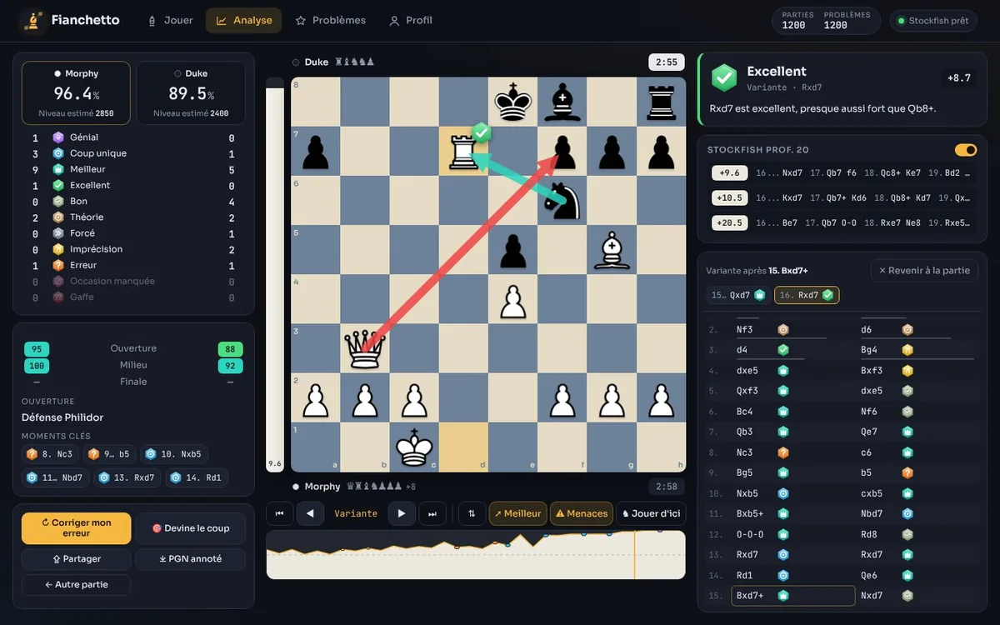
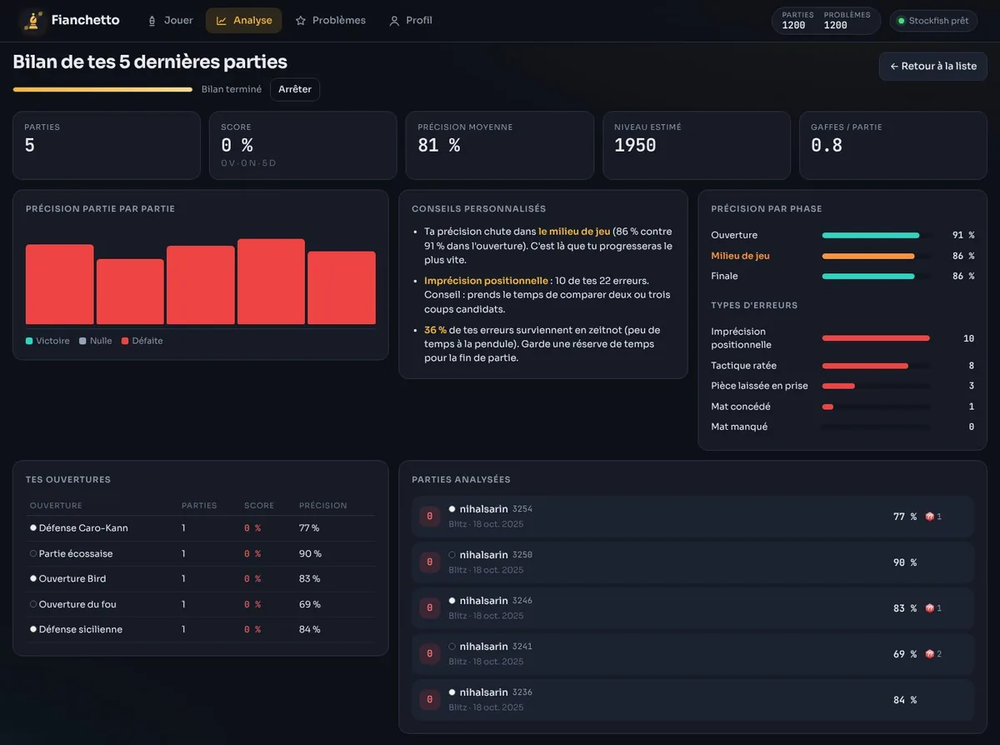
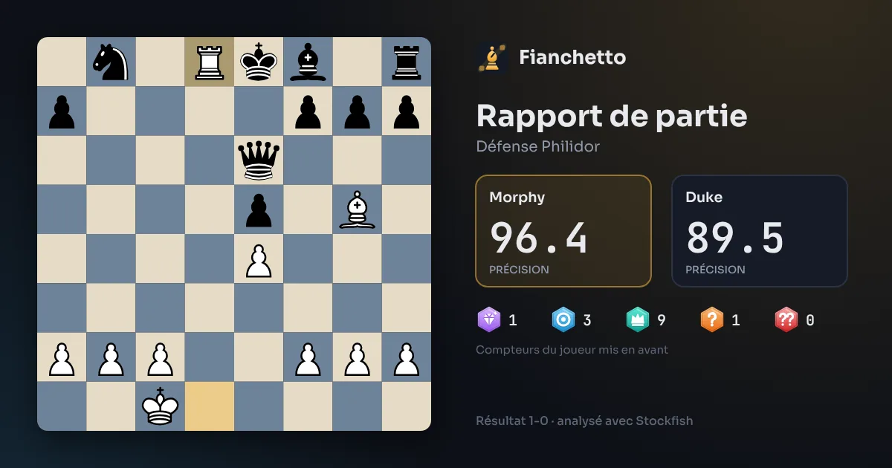
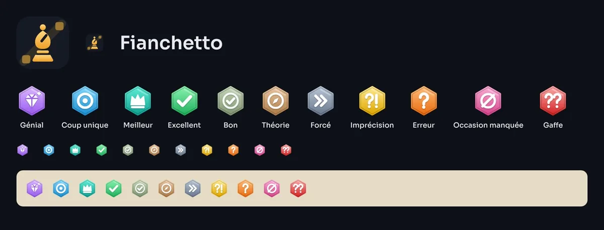

Une application web d’échecs complète : jouer contre des bots, importer ses parties Chess.com ou Lichess et obtenir un rapport d’analyse détaillé avec Stockfish, puis s’entraîner sur ses propres erreurs. Tout tourne dans le navigateur, sans serveur ni compte.

Je joue sur Chess.com et je voulais des bilans détaillés de mes parties sans abonnement. J’ai donc écrit ma propre application : le moteur Stockfish (compilé en WebAssembly) analyse chaque position dans un Web Worker, et tout le reste — classification des coups, précision, commentaires, bilans — est codé à partir de formules publiques. L’interface, le logo et les icônes sont originaux.
Précision et niveau estimé par joueur, 11 catégories de coups, précision par phase, nom de l’ouverture, moments clés, temps par coup et commentaire en français pour chaque coup.
Parties récupérées par les API publiques de Chess.com et de Lichess, ou PGN collé. Les rapports sont gardés en cache pour se rouvrir instantanément.
On déplace n’importe quelle pièce pendant l’analyse : la variante est classée en direct, avec 3 lignes moteur qui s’affinent et les menaces adverses.
« Réessayer ce coup », « Devine le coup », et un mode Problèmes qui transforme les fautes de tes parties en exercices.
Analyse en lot des 5 à 30 dernières parties : typologie des erreurs, erreurs en zeitnot, statistiques par ouverture et conseils personnalisés.
De 500 à 2500 Elo, avec chacun sa personnalité : erreurs volontaires dosées, qualité de chaque coup affichée en direct et classement Elo (formule FIDE).




/** Probabilité de gain des Blancs (0–100) pour un score en centipions. */
export function winPercent(cp) {
const c = Math.max(-1000, Math.min(1000, cp));
return 50 + 50 * (2 / (1 + Math.exp(-0.00368208 * c)) - 1);
}
/** Précision d'un coup (0–100) à partir de la perte de probabilité de gain. */
export function moveAccuracy(lossPct) {
const raw = 103.1668100711649 * Math.exp(-0.04354415386753951 * Math.max(0, lossPct))
- 3.166924740191411 + 1;
return Math.max(0, Math.min(100, raw));
}index.html # Coquille de l'application (4 vues)
css/style.css # Thème « ardoise & ambre », responsive
js/app.js # Routage, moteurs partagés, statut
js/core/ # Logique pure, testable sans navigateur
engine.js # Pilote UCI de Stockfish (file d'attente, MultiPV)
review.js # Probabilité de gain, classification, précision, commentaires
pgn.js # Lecteur PGN (commentaires, variantes, horloges, FEN)
openings.js # Livre d'ouvertures indexé par position (119 lignes)
js/ui/ # Échiquier maison, icônes SVG, carte de partage (canvas)
js/views/ # Jouer, Analyse, rapport, bilan, Problèmes, Profil
js/importers.js # Clients des API Chess.com et Lichess
vendor/ # Stockfish (WebAssembly), chess.js
tests/ # Tests Node avec le vrai StockfishUne file d’attente de commandes vers Stockfish, partagée entre l’analyse continue, les bots et les rapports, avec annulation des calculs devenus inutiles.
Glisser-déposer à la souris et au doigt, animations, flèches et surbrillances, sans bibliothèque d’interface.
La logique d’analyse est pure et testée sous Node avec le vrai Stockfish ; le pack de problèmes hors ligne est vérifié automatiquement.
Le projet est publié sous licence GPL-3.0 (imposée par Stockfish), sans étape de build : le dépôt est servi tel quel par GitHub Pages.